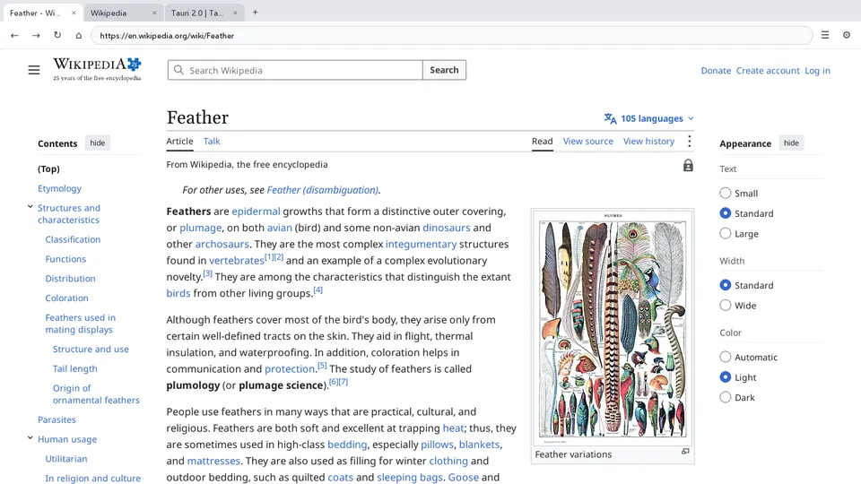
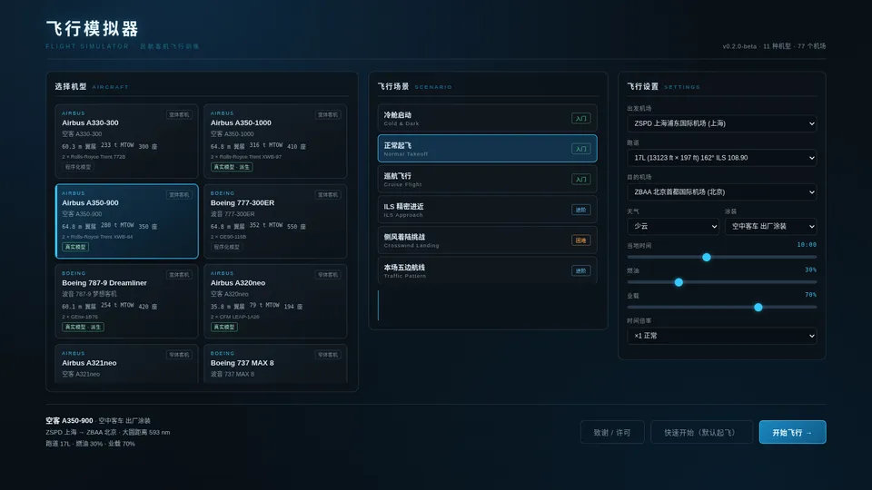
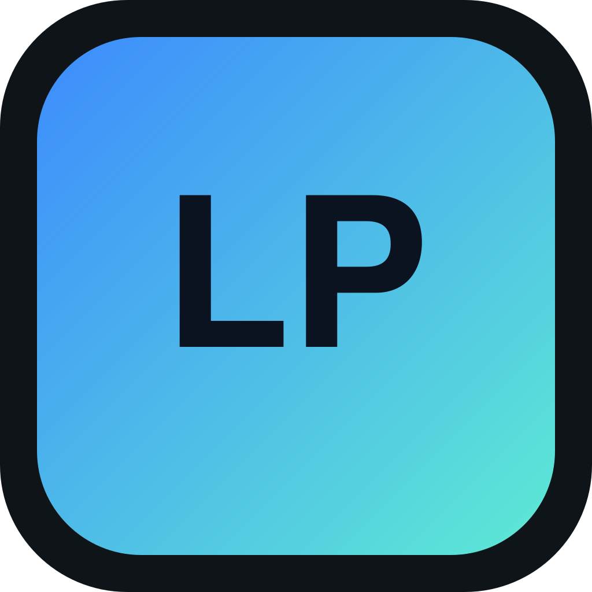

Windows / macOS
Plume Browser
超轻量的网页浏览器，用系统自带的网页内核，不用登录。
我是 Kevin，一名初中生。这里放我做的软件、小工具和一些实验，全部免费，全部手搓。
↓ 看看作品
超轻量的网页浏览器，用系统自带的网页内核，不用登录。

免费民航客机飞行模拟器，含完整冷舱启动与可点击三维驾驶舱。
课堂点名、分组与小组赛工具，数据只保存在本机。
已停止开发 · 仍可正常下载和使用
将于 2026年11月1日 0:00（北京时间）停止下载

网卡聚合助手，把多条网络的带宽叠在一起。
SkyRoute · beta 0.6.0
完整冷舱启动、可点击的三维驾驶舱。Windows 便携版与网页版，免费。
在页面任意空白处点一下，掉一个字母在页面任意空白处点一下，掉一个字
好用的东西不必喧哗。它安静地待在那里，在你需要的时候，刚好顺手。